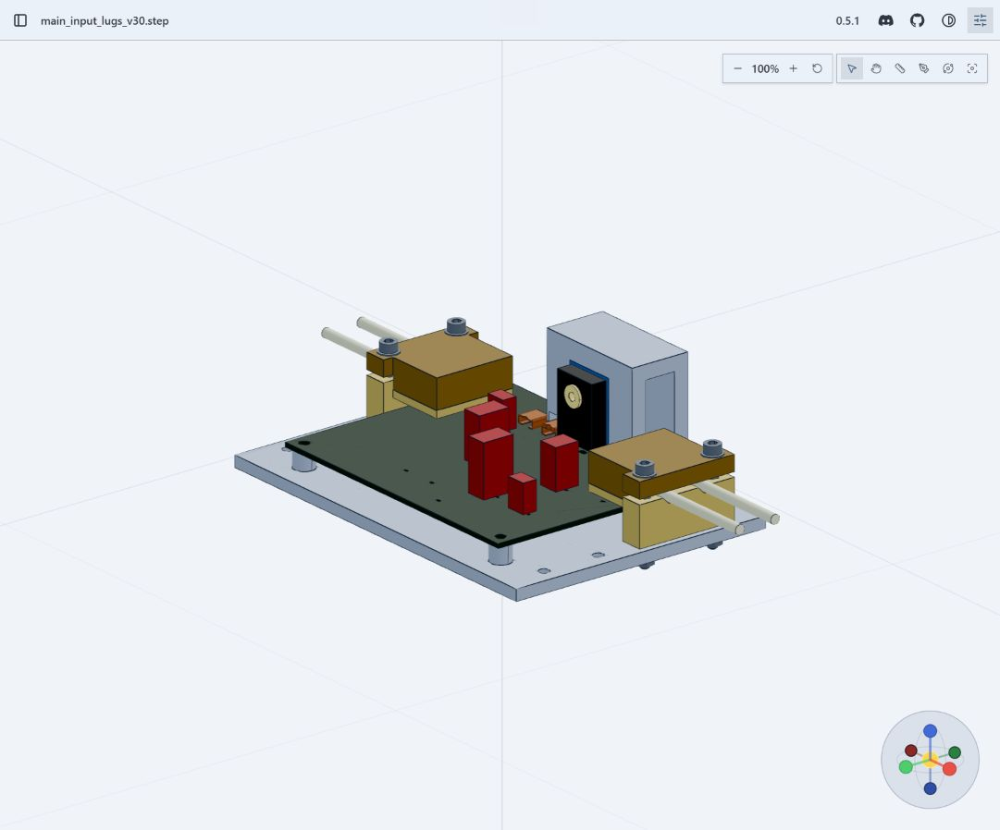
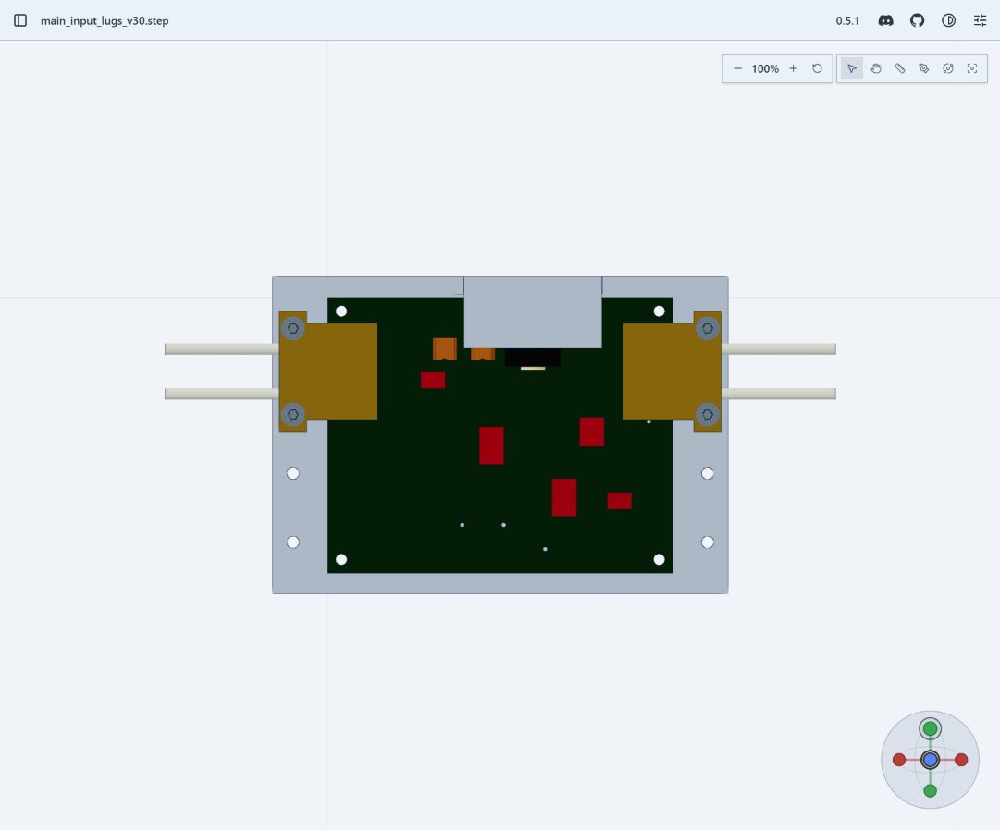
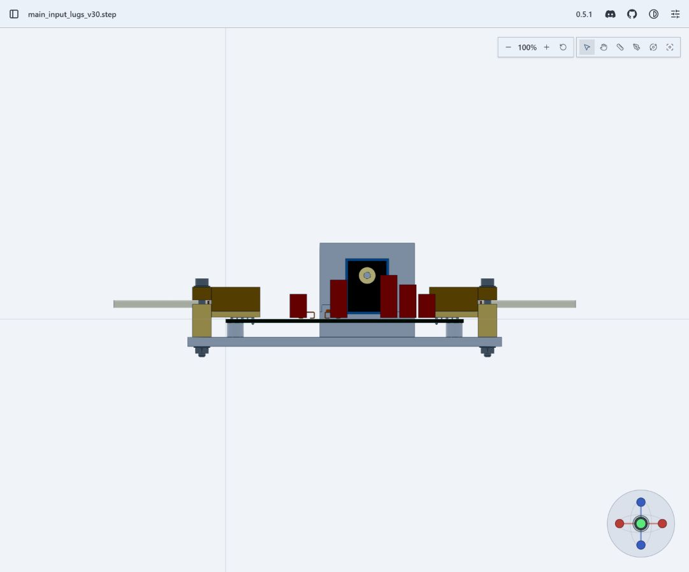

交互查看装配 · 下载 STEP · 下载增量包 · 完整说明与来源链接
本轮延续同一 WP10 候选。可交付的是可审阅的数字设计增量；整机详细设计尚未闭环，不构成制造、接电或飞行放行。
- 主输入模块 STEP 为 60 个有效实体、56 个装配子件。新增 TE 130191 实际原厂线耳模型、M5 紧固件、两组 PEEK 导向底座与绝缘盖、M3 安装件和四段局部导线。原载板与 PCB 坐标沿用 V29。
- 线耳候选为 TE 130191；导线为 55A0111-10-9；压接工具候选为 49935。按 A3 受控图采用 0.990±0.051 mm 舌厚，未采用网页不一致数值。旧 C 版 STEP 只用于已对照尺寸的未压接参考几何。
- 四个端接对应 J204/J205/J206/J207，已绑定原系统网络。电气系统仍为 211 位号、677 条针脚记录，PCB/原理图与 V29 相同。选型总 BOM 实际追加 9 行，旧 BOM 原字节保存在 history 中。
- 新部件与现有已建模零件未发现穿透。三组匹配线径模型覆盖 3.0988/3.2512/3.4036 mm；抬盖、错误转角和旧小线径罩体穿透反例均能被检查发现。单一名义夹块面对最大线径仍被拒绝，未虚构夹持公差合格。
- 等效主路径电流为 17.8476767799 A。四段局部导线各计 46.35 mm（筒外40 mm、筒内6.35 mm），100°C线性铜电阻场景下损耗0.320890 W。它从原有0.01 Ω分配中扣算；与剩余热量合计3.1853956644 W，不重复计入漏电或接点分配。
上述部件依据：TE [线耳图](https://www.te.com/commerce/DocumentDelivery/DDEController?Action=srchrtrv&DocFormat=pdf&DocLang=English&DocNm=130191&DocType=Customer+Drawing&PartCntxt=130191)、[导线图](https://www.te.com/commerce/DocumentDelivery/DDEController?Action=srchrtrv&DocFormat=pdf&DocLang=English&DocNm=55A0111&DocType=Customer+Drawing&PartCntxt=216127-000)、[压接说明](https://www.te.com/commerce/DocumentDelivery/DDEController?Action=srchrtrv&DocFormat=pdf&DocLang=English&DocNm=408-1542&DocType=Specification+Or+Standard&PartCntxt=49935)。原厂文件和 SHA256 均包含在交付包。
21项针对性源几何/夹持接触/电阻分账检查通过，包含错误模型和重复电流反例。STEP拓扑检查覆盖56个装配子件，新增底座/罩体自交检查覆盖4个子件。原生静态快照曾触发1400 MiB单任务上限；拆开解析后，后续渲染又因可用内存低于2 GiB未启动。已改用现有浏览器成功显示同一STEP，并实际检查、保存等轴/俯视/正视三张截图。它们明确标为浏览器截图，不能记作原生快照CLI通过。整模块未执行全体逐位置自交检查，罩内隐藏接口也未凭截图判合格。具体回执见 `VISUAL_REVIEW_V30.json` 与 `DELIVERY_STATUS_V30.json`。
V29 ERC 为0错误0警告；PCB仍有4项已登记的Kelvin分流连接DRC，本轮电气源无变化，没有把它们清零或忽略。21项局部检查不等于整机验收。
1. 连续散热：V29未加罩条件下CHB壳温约106.23–107.61°C，超过105°C；新增罩体的热影响尚未重算。
2. 整舱布置：本主输入模块仍未获得可接受安装位置，没有加入974项整机实例计划。还缺23个板上电气位号实体，不能授予整板或整星无干涉结论。
3. 端接工程化：螺纹有效啮合、螺母/垫圈公差、扭矩与防松、焊点受扭、夹持预紧/拉脱、实际压接后尺寸和接点温升未验证。方孔有角度间隙，不能宣称已绕过焊点传递全部2.2 N·m。
4. 整机线束：四段只是局部参考段，实际各端口电流、远端连接器、完整路径和裁线表未绑定。
5. 推进同修订ICD与整机逐关节质量惯量仍缺。原873组件/99位号父本和37行闭环表保留；不改写历史科学裁决。
- `main_input_lugs_v30.step`：可导入SolidWorks的STEP；本轮未生成SLDASM/SLDPRT。
- `main_input_lugs_v30.step.py`：参数化几何源；继承 `main_input_terminals_v29.step.py` 与 `mechanical_parts.py`。
- `LUG_PARTIAL_ASSEMBLY_BOM_V30.csv`：56项装配映射；`LUG_ADDED_PARTS_BOM_V30.csv`：9行实际新增选型。
- `LUG_NET_BINDING_V30.csv`、`CANDIDATE_V30.json`：同版本电气绑定和输入哈希。
- `WP10_V30_LUG_HARNESS_DELTA.zip`：本轮增量，需现有WP10项目依赖，不是独立整星发布包。
中断期间使用的CAD技能入口更新。本轮续验使用项目局部安装的 `cadgen[snapshot]==0.5.1`，原STEP字节保持不变；单独编译检查确认已有缓存可用，没有重建STEP。`tools/run_lug_review_resume_v30.py`记录文档验证和快照命令，`split_lug_snapshot_v30.py`分进程解析/渲染。原生执行保留同一个工作区互斥锁、2 GiB启动门槛和1400 MiB硬上限；预清理后的直接启动也经过同一 `native_delta_guard.py`。复查前设置对应Python依赖，不能把历史CLI路径视作当前可用入口。
内存处理记录包含12个已确认无父进程的残留Python工作进程关闭。另一个仍活跃的F3R2只读检查曾短暂挂起8个子进程，90秒后全部自动恢复，没有终止该任务。保留的CAD查看服务用于本交付。
下一步仍在机电主线：优先降低输入保护开关损耗并重新求解启动/故障SOA与电热平衡，随后按接受的热路径调整舱内安装；当前不宣布已具备整机交付条件。


